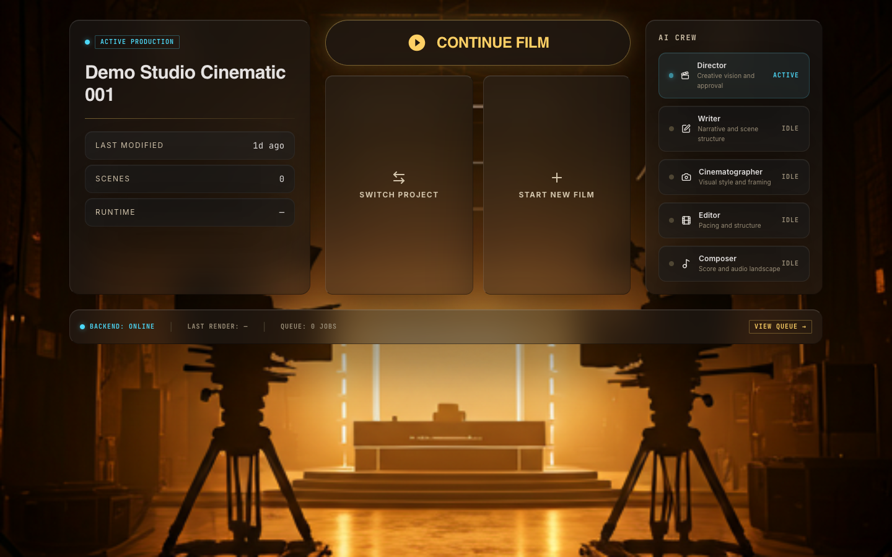
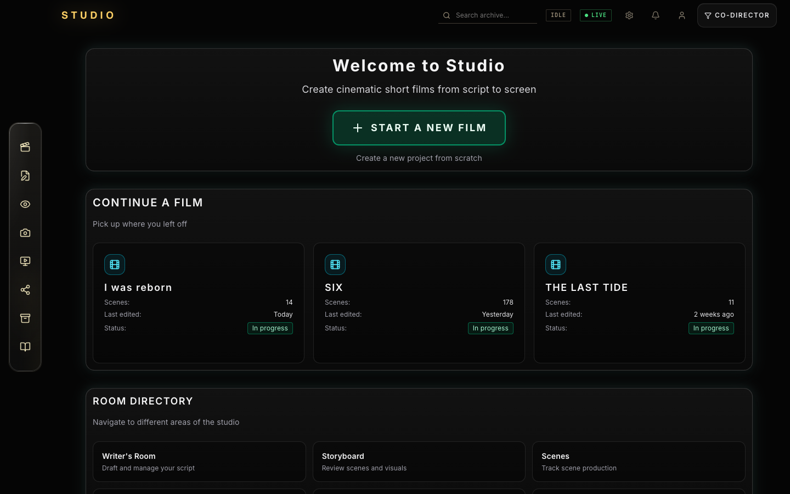
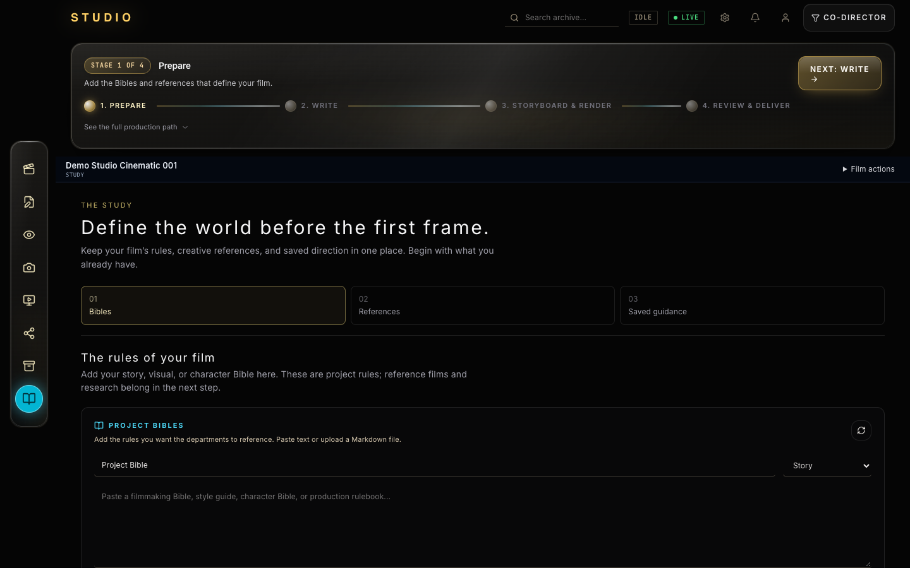
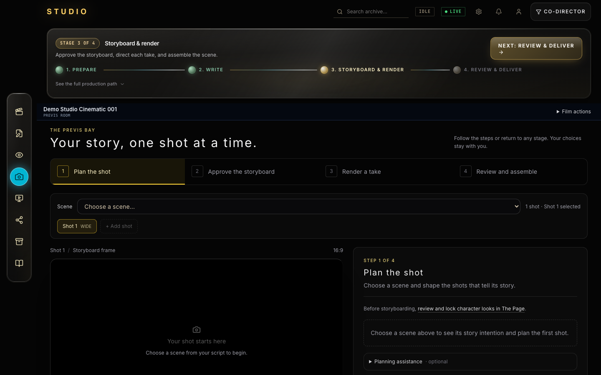
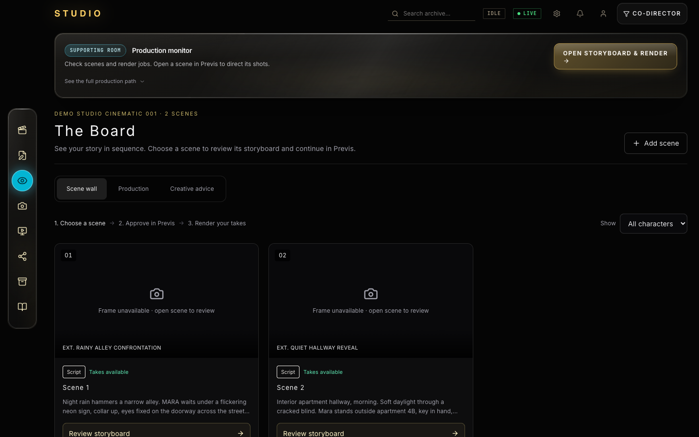
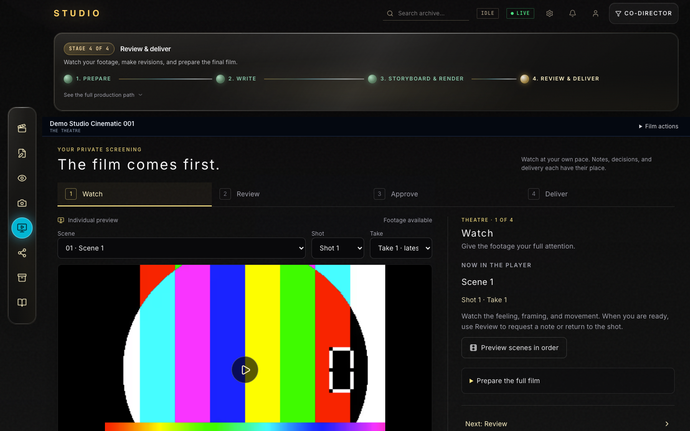
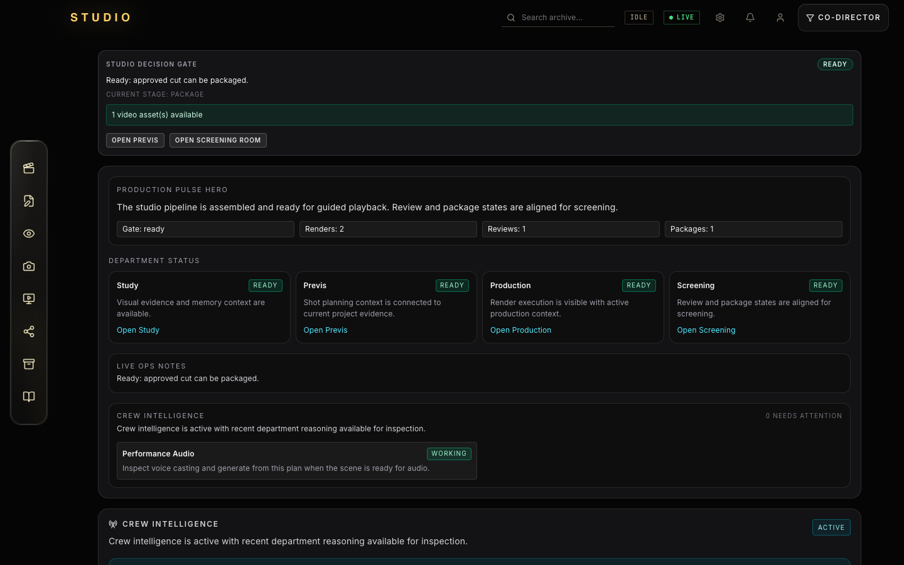

Most AI video tools can generate clips. Very few can direct a film. Studio is a cinematic operating system that carries creative intent from first evidence to final package — room-based, memory-aware, and honest about what it knows.

The Gate is the front door, lit like a projection booth. One click on CONTINUE FILM drops you straight into the Screening Room — with the backend, render queue, and last render stats already in view.
The AI crew is present before you even enter the building: Director, Writer, Cinematographer, Editor, Composer — each with a ACTIVE / IDLE state and a trail of last activity.

The lobby is where a film resumes instead of restarting. Seeded films — I was reborn, SIX, THE LAST TIDE — sit in a continue grid, each carrying its scene count, last-edit time, and status so you know exactly what's waiting.
The Route Directory makes the mental model visible: The Page, The Previs Bay, The Board, The Theater, The Study, The Vault — one continuous state, six rooms.

The Study stocks the film's rules: a reference library organized by craft — cinematography, editing, sound, narrative, visual, character, world — attached into the PERMANENT STUDIO BRAIN with one click.
Director memory is here too. Every saved decision is explicit, editable, and forgettable — the studio learns the direction you believe in, and never claims a preference you didn't save.

Previs is where a script beat becomes a directable visual plan: storyboard blueprint → continuity review → render contract. Each shot carries a camera preset, framing, seed, and the cinematic reasoning behind it.
The render stage is explicit — Prepare → Generate → Compose → Video ready — so the pipeline reads like a craft pipeline, not a black box.

The Board stands the film up as a wall of frames: scenes in order, storyboard state stamped on each card, queue health in one strip, and render activity streaming beneath.
Switch between Scene wall / Production / Creative advice to see the film as sequence, as pipeline, or through the crew's eyes — the five department advisers follow the footage wherever it goes.

The Theater paces like a real viewing. The player carries the take; Scene → Shot → Take selectors keep the full history one click away, in a room that breathes like a cinema.
The intelligence here is honest, not cosmetic: why this shot matters, co-director notes on request, audience perspective, and editorial/audio/design specialist review — then an approval gate that hands the film to production.

Crew Ops reports operational truth in plain language: the decision gate reads READY — approved cut can be packaged, and every department signs in — Study, Previs, Production, Screening.
Renders, reviews, and packages are counted in the open, with retry and reconcile recovery for failed jobs — the engine room stays connected to the same creative context as every other room.
"Studio is not another AI video wrapper. It is a cinematic operating system that keeps creative memory alive from first evidence to final cut — and it only ever remembers what you choose to teach it."